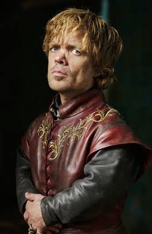
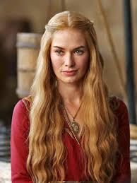
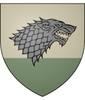
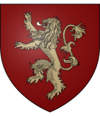
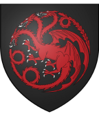
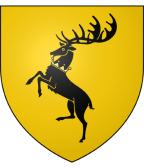
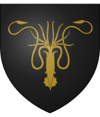
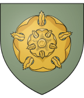
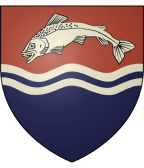

David Benioff
Américain
Créateur, scénariste et producteur exécutif

Série primée
« Dans le jeu des trônes, on gagne ou on meurt. »
Sur le continent de Westeros, de grandes maisons s'affrontent pour le
Trône de fer pendant qu'une menace ancienne se réveille au Nord.
| Sortie | Saisons | Format | Age |
|---|---|---|---|
| 2011 | 8 | ~ 60 min | -16 |
Créée par David Benioff et D. B. Weiss (États-Unis)






Américain
Créateur, scénariste et producteur exécutif
Américain
Créateur, scénariste et producteur exécutif
Américain
Auteur de la saga « Le Trône de fer », coproducteur
Record pour une série dramatique, dont 4 « Meilleur série dramatique »
Meilleur acteur dans un second rôle pour Peter Dinklage (2012)
Meilleur présentation dramatique, format long (2012)
Récompense l'excellence des programmes télévisés (2011)
La critiques sakue une mise en scène ambitieuse et des personnages d'une rare complexité
Lire les avisLes spectateurs plébiscitent l'intrigue et les rebondissements, malgré une fin débattue.
Lire les avisDécouvrez les grandes maisons de Westeros : leur blason, leur devise, leur territoire et les personnages qui les composent.

« L'hiver vient »
Région
Le Nord — Winterfell
Personnages principaux
Eddard, Catelyn, Robb, Sansa, Arya, Bran

« Écoutez-moi rugir ! »
Région
Terres de l'Ouest — Castral Roc
Personnages principaux
Tywin, Cersei, Jaime, Tyrion

« Feu et sang »
Région
Peyredragon
Personnages principaux
Daenerys, Viserys, Rhaegar

« Nôtre est la fureur »
Région
Terres de l'Orage — Accalmie
Personnages principaux
Robert, Stannis, Renly

« Nous ne semons pas »
Région
Îles de Fer — Pyk
Personnages principaux
Balon, Theon, Yara, Euron

« Plus haut, plus fort »
Région
Le Bief — Hautjardin
Personnages principaux
Olenna, Mace, Margaery, Loras
« Insoumis, invaincus, intacts »
Région
Dorne — Lancehélion
Personnages principaux
Doran, Oberyn, Trystane
« Aussi haut que l'honneur »
Région
Le Val — Les Eyrié
Personnages principaux
Jon, Lysa, Robin

« Famille, devoir, honneur »
Région
Terres du Conflit — Vivesaigues
Personnages principaux
Hoster, Catelyn, Edmure, Brynden
Rivalité
L'exécution d'Eddard Stark à Port-Réal déclenche la guerre entre le Nord et les Lannister.
Rivalité
Robert Baratheon a renversé les Targaryen ; Daenerys veut reprendre le trône de son père.
Alliance
Liées par les mariages des sœurs Tully, les trois maisons font front commun au Nord et à l'Est.

Interviews d'acteurs
12 mars 2024
Emilia Clarke revient sur son parcours et ses scènes les plus marquantes avec les dragons.

Secrets de tournage
28 février 2024
Remparts, escaliers et ruelles : visite des lieux de tournage croates de la capitale.

Effets spéciaux
15 janvier 2024
Des premières esquisses aux images de synthèse, plongée dans les ateliers d'effets visuels.

Actualités
4 janvier 2024
Après House of the Dragon, l'univers de George R. R. Martin continue de s'agrandir.


Presse et spectateurs ->